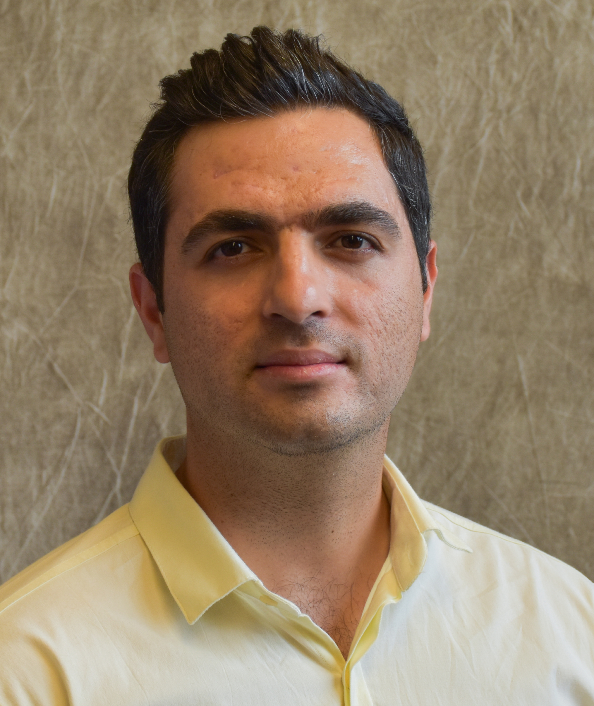
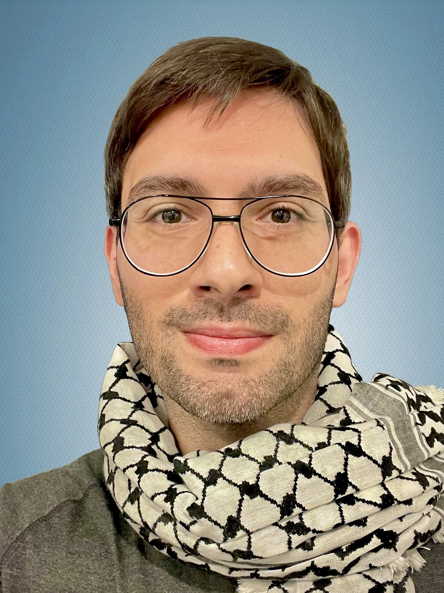

Research Team
Dr. Jason Hawkins is an Assistant Professor in the Department of Civil Engineering at the University of Calgary. His expertise is in travel behaviour, transportation demand modeling, spatial econometrics, and life-cycle assessment. Dr. Hawkins is a member of the Transportation Research Board (TRB) Traveler Behavior and Values Committee. He is also a board member on the Zephyr Foundation for open transportation analysis. Dr. Hawkins received his Ph.D. from the University of Toronto in 2021, for which he received the Eric Pas Award from the International Association for Travel Behaviour Research (IATBR). He holds M.Sc. (2016) and B.Sc. (2014) degrees in Civil Engineering from the University of Calgary. Dr. Hawkins completed postdoctoral work at the University of Texas at Austin. He was previously an Assistant Professor of Civil and Environmental Engineering at the University of Nebraska–Lincoln (2021–2024).
Prospective Students
The TECH Group is always looking for curious scholars to conduct transdisciplinary research in methods and empirics related to sustainable infrastructure development and household choice. Funding programs include the NSERC Graduate Programs for Master’s and Doctoral students, the SSHRC Joseph-Armand Bombardier Canada Graduate Scholarship, the China Scholarship Council, and other funded opportunities. If you have received funding from these programs (or plan to apply), please send me an email if you are interested in the TECH Group and the University of Calgary. Please also check your eligibility prior to emailing me if you plan to apply.
We are particularly interested in students with transdisciplinary research interests in policy studies or planning. See the University of Calgary Transdisciplinary Research in Policy Studies website for more details.
Undergraduate students at the University of Calgary are encouraged to reach out about research opportunities. Funding is available through PURE.
Graduate Students
Sam's research focuses on the safety, comfort, and design of multi-use pathways. He is passionate about using preference and behavioural modelling to understand transportation choices and encourage people to make healthy and sustainable transportation decisions. Sam previously completed his BSc and MSc in Civil Engineering at the University of Calgary. Outside academia, Sam's interests include coaching speed skating, climbing mountains, and baking banana bread.
Mehrnoosh is an M.Sc. student in Transportation Engineering. She received her M.Sc. in Industrial Engineering with a specialization in Logistics and Supply Chain Management from K.N. Toosi University of Technology and her B.Sc. in Industrial Engineering from Azad University.
Alumni
Graduate Students and Research Associates
PhD and MSc in Civil Engineering (University of Calgary), with doctoral work on public transit equity through simulation and mathematical modelling.
EV charging station planning for multi-unit dwellings in Calgary considering travel patterns and grid constraints (co-supervised with Dr. Lina Kattan).
Electric vehicle adoption in the United States.

Bayesian statistical representations of transportation accessibility for equity applications.


Thesis: "Performing Motorized-to-Non-Motorized Crash Analysis Using Multi-Model LBS Traffic Data Calibrated Through Random Forest Models"
Undergraduate Research Assistants
| Zunera Ayaz | Undergraduate Research Assistant | University of Calgary | |
| Jawwad Ahmed | Undergraduate Research Assistant | University of Calgary | |
| 2025 | Yasmine Baccari | B.S. Civil Engineering | University of Calgary |
| 2023–2024 | Kun-Yu Lee | B.S. Computer Science | University of Nebraska |
| 2022–2024 | Sagun Karki | B.S. Computer Science | University of Nebraska |
| 2022–2023 | Abigail Metschke | B.S. Environmental Engineering | University of Nebraska |
| 2022–2023 | William Turman | B.S. Civil Engineering | University of Nebraska |
| 2022 | Casey Nolte | B.S. Chemical Engineering | University of Nebraska |
| 2022 | Kumo Babe | B.S. Mechanical Engineering | University of Nebraska |
High School Researchers
| Zihan (Camila) Ma | High School Researcher |